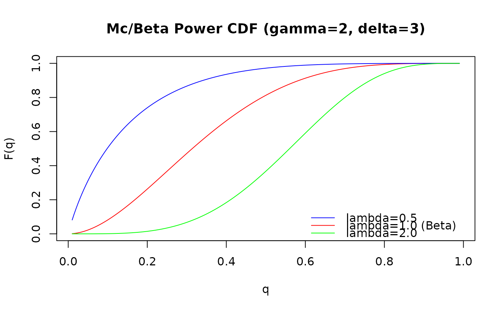

Computes the cumulative distribution function (CDF), \(F(q) = P(X \le q)\),
for the McDonald (Mc) distribution (also known as Beta Power) with
parameters gamma (\(\gamma\)), delta (\(\delta\)), and
lambda (\(\lambda\)). This distribution is defined on the interval
(0, 1) and is a special case of the Generalized Kumaraswamy (GKw)
distribution where \(\alpha = 1\) and \(\beta = 1\).
Arguments
- q
Vector of quantiles (values generally between 0 and 1).
- gamma
Shape parameter
gamma> 0. Can be a scalar or a vector. Default: 1.0.- delta
Shape parameter
delta>= 0. Can be a scalar or a vector. Default: 0.0.- lambda
Shape parameter
lambda> 0. Can be a scalar or a vector. Default: 1.0.- lower_tail
Logical; if
TRUE(default), probabilities are \(P(X \le q)\), otherwise, \(P(X > q)\).- log_p
Logical; if
TRUE, probabilities \(p\) are given as \(\log(p)\). Default:FALSE.
Value
A vector of probabilities, \(F(q)\), or their logarithms/complements
depending on lower_tail and log_p. The length of the result
is determined by the recycling rule applied to the arguments (q,
gamma, delta, lambda). Returns 0 (or -Inf
if log_p = TRUE) for q <= 0 and 1 (or 0 if
log_p = TRUE) for q >= 1. Returns NaN for invalid
parameters.
Details
The McDonald (Mc) distribution is a special case of the five-parameter
Generalized Kumaraswamy (GKw) distribution (pgkw) obtained
by setting parameters \(\alpha = 1\) and \(\beta = 1\).
The CDF of the GKw distribution is \(F_{GKw}(q) = I_{y(q)}(\gamma, \delta+1)\),
where \(y(q) = [1-(1-q^{\alpha})^{\beta}]^{\lambda}\) and \(I_x(a,b)\)
is the regularized incomplete beta function (pbeta).
Setting \(\alpha=1\) and \(\beta=1\) simplifies \(y(q)\) to \(q^\lambda\),
yielding the Mc CDF:
$$
F(q; \gamma, \delta, \lambda) = I_{q^\lambda}(\gamma, \delta+1)
$$
This is evaluated using the pbeta function as
pbeta(q^lambda, shape1 = gamma, shape2 = delta + 1).
References
McDonald, J. B. (1984). Some generalized functions for the size distribution of income. Econometrica, 52(3), 647-663.
Cordeiro, G. M., & de Castro, M. (2011). A new family of generalized distributions. Journal of Statistical Computation and Simulation,
Kumaraswamy, P. (1980). A generalized probability density function for double-bounded random processes. Journal of Hydrology, 46(1-2), 79-88.
Examples
# \donttest{
# Example values
q_vals <- c(0.2, 0.5, 0.8)
gamma_par <- 2.0
delta_par <- 1.5
lambda_par <- 1.0 # Equivalent to Beta(gamma, delta+1)
# Calculate CDF P(X <= q) using pmc
probs <- pmc(q_vals, gamma_par, delta_par, lambda_par)
print(probs)
#> [1] 0.1413499 0.6022524 0.9463344
# Compare with Beta CDF
print(stats::pbeta(q_vals, shape1 = gamma_par, shape2 = delta_par + 1))
#> [1] 0.1413499 0.6022524 0.9463344
# Calculate upper tail P(X > q)
probs_upper <- pmc(q_vals, gamma_par, delta_par, lambda_par,
lower_tail = FALSE)
print(probs_upper)
#> [1] 0.85865010 0.39774756 0.05366563
# Check: probs + probs_upper should be 1
print(probs + probs_upper)
#> [1] 1 1 1
# Calculate log CDF
log_probs <- pmc(q_vals, gamma_par, delta_par, lambda_par, log_p = TRUE)
print(log_probs)
#> [1] -1.95651693 -0.50707859 -0.05515932
# Check: should match log(probs)
print(log(probs))
#> [1] -1.95651693 -0.50707859 -0.05515932
# Compare with pgkw setting alpha = 1, beta = 1
probs_gkw <- pgkw(q_vals, alpha = 1.0, beta = 1.0, gamma = gamma_par,
delta = delta_par, lambda = lambda_par)
print(paste("Max difference:", max(abs(probs - probs_gkw)))) # Should be near zero
#> [1] "Max difference: 5.55111512312578e-17"
# Plot the CDF for different lambda values
curve_q <- seq(0.01, 0.99, length.out = 200)
curve_p1 <- pmc(curve_q, gamma = 2, delta = 3, lambda = 0.5)
curve_p2 <- pmc(curve_q, gamma = 2, delta = 3, lambda = 1.0) # Beta(2, 4)
curve_p3 <- pmc(curve_q, gamma = 2, delta = 3, lambda = 2.0)
plot(curve_q, curve_p2, type = "l", main = "Mc/Beta Power CDF (gamma=2, delta=3)",
xlab = "q", ylab = "F(q)", col = "red", ylim = c(0, 1))
lines(curve_q, curve_p1, col = "blue")
lines(curve_q, curve_p3, col = "green")
legend("bottomright", legend = c("lambda=0.5", "lambda=1.0 (Beta)", "lambda=2.0"),
col = c("blue", "red", "green"), lty = 1, bty = "n")

# }